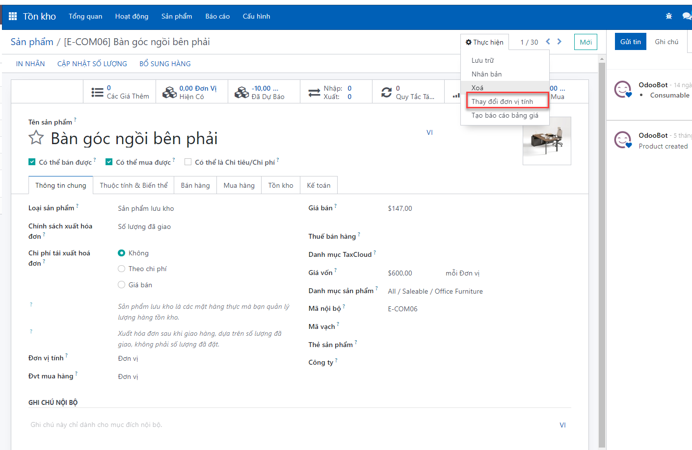
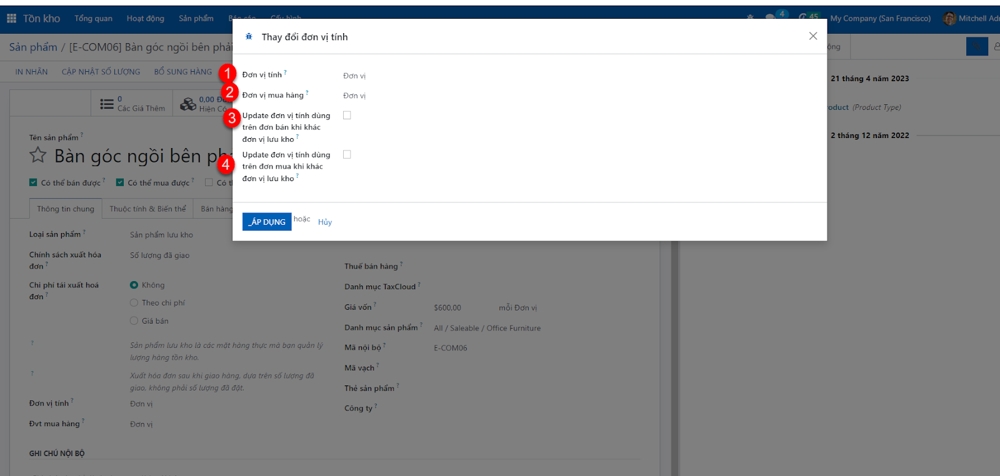
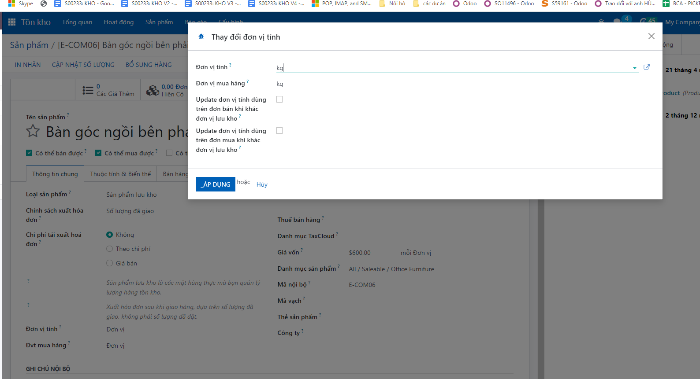
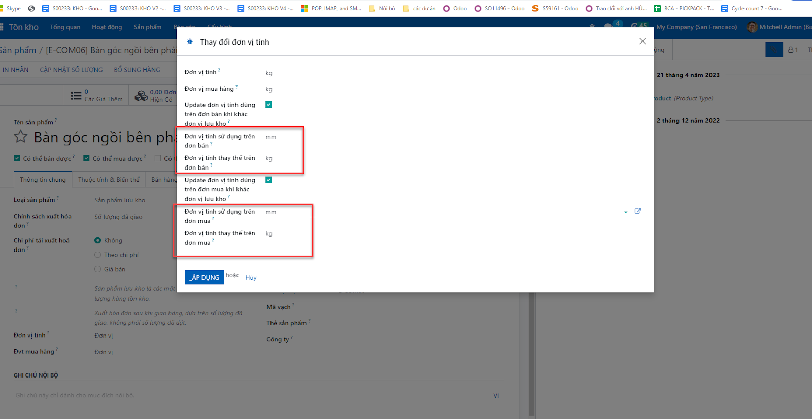

During the process of using the software, with the need to change the unit of measurement of products that have had purchase/sale/move of warehouse transactions, users who want to change the unit of measurement should follow these steps:
Step 1: At the product screen, click on "Execute > select Change unit of measurement"

The system will display a screen to update the calculation unit

Description of items:
*for example: product “Right corner table”
Previous unit of calculation: unit
Unit of previous purchase: unit
Users who need to convert to kg units should select as shown below:

Click : The system will automatically change the unit of measurement on the standing product and will also search on sales orders/purchase orders/warehouse movements that are using the old unit and update to the new unit. Result: will convert all "units" of this product to kg on the sales order/purchase order/warehouse movements
*Another example:
Products whose previous unit of measurement is kg, but on the sales/purchase order the unit is "mm", items 3 and 4 will be used to update. example pictured below

Click : : The system will automatically change the unit of measurement on the standing product and will also search on sales orders, purchase orders, warehouse movements that are using the old unit and update to the new corresponding unit. selected response
result:
Will convert all "units" of this product to kg on sales orders/purchase orders/warehouse movements and will change all units of "mm" in sales/purchase orders of this product to kg
Note: customers need to know which unit of measure is being used on the sales/purchase order to be able to choose the correct unit to update.